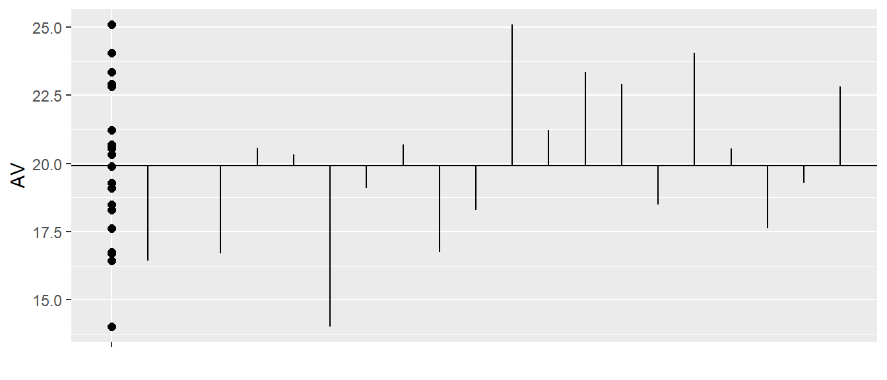
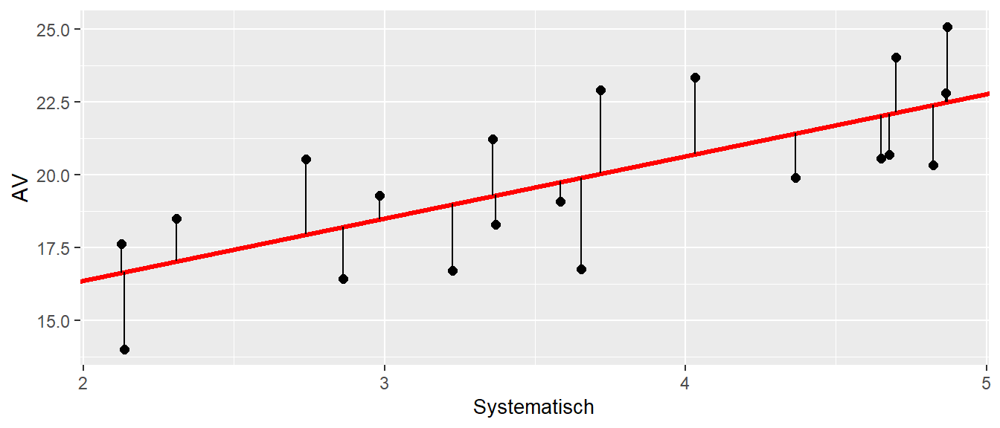
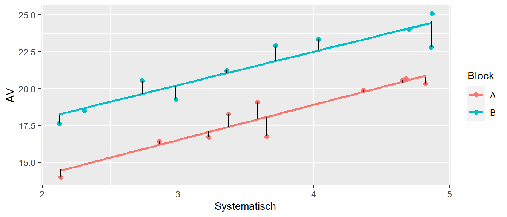

25 Completely Randomized Block Design
Nachdem wir CRD and die Verallgemeinerung die CRFD kennengelernt haben um den Einfluss von Variablen auf eine abhängige Variable für die wir uns interessieren zu untersuchen gab uns der Ansatz der ANCOVA eine Möglichkeit Varianz in der abhängigen Variablen mittels einer Kovariaten aus dem Modell rauszurechnen. Der Einfluss der Kovariaten ist für uns dabei per-se nicht von Interesse, sondern wir sehen die Kovariate vor allem als Möglichkeit an Varianz zu kontrollieren. Diese Idee werden in dem vorliegenden Kapitel weiter ausbauen und uns anschauen wie wir mittels sogenannter Blockfaktoren weitere Varianz aus der abhänigen Variable isolieren können. Dies hilft uns wieder dabei den Einfluss derjenigen unabhängigen Variablen für die wir uns interessieren genau zu schätzen.
25.1 Motivationsproblem
Fangen wir mit einem Beispiel an, das zunächst einmal nichts mit sportlicher Leistung zu tun hat.
Variabilität kontrollieren



Zusammengefasst können wir die Varianz in der abhängingen Variable \(\sigma_{Y}^2\) in vier verschiedene Komponenten unterteilen:
- Systematische Varianz auf Grund des Treatments
- Varianz auf Grund von Kovariaten
- Varianz auf Grund von Blockeffekten
- Unsystematische oder Residualvarianz
Oder als Pseudogleichung geschrieben:
\[\begin{equation*} \sigma_{Y}^2 = \sigma_{\text{Effekt(e)}}^2 + \sigma_{\text{Kovariate}}^2 + \sigma_{\text{Block}}^2 + \sigma_{\epsilon}^2 \end{equation*}\]
25.2 Abhängiger t-Test als Beispiel für einen Blockfaktor

mod_ttest <- t.test(y ~ condition, data = df_dep, paired=T)
mod_ttest
Paired t-test
data: y by condition
t = -5.8211, df = 5, p-value = 0.002113
alternative hypothesis: true mean difference is not equal to 0
95 percent confidence interval:
-5.045901 -1.954531
sample estimates:
mean difference
-3.500216 Abhängiger t-Test als Lineares Modell
mod_lm <- lm(y ~id + condition, df_dep)
summary(mod_lm)
Call:
lm(formula = y ~ id + condition, data = df_dep)
Residuals:
1 2 3 4 5 6 7 8 9 10
-0.0390 0.0390 -0.5848 0.5848 0.2296 -0.2296 0.5834 -0.5834 0.8946 -0.8946
11 12
-1.0839 1.0839
Coefficients:
Estimate Std. Error t value Pr(>|t|)
(Intercept) 12.7155 0.7954 15.985 1.74e-05 ***
idP2 -0.5315 1.0415 -0.510 0.63156
idP3 -1.1474 1.0415 -1.102 0.32078
idP4 -2.9604 1.0415 -2.842 0.03614 *
idP5 2.8791 1.0415 2.764 0.03962 *
idP6 0.8169 1.0415 0.784 0.46835
conditionB 3.5002 0.6013 5.821 0.00211 **
---
Signif. codes: 0 '***' 0.001 '**' 0.01 '*' 0.05 '.' 0.1 ' ' 1
Residual standard error: 1.041 on 5 degrees of freedom
Multiple R-squared: 0.9326, Adjusted R-squared: 0.8518
F-statistic: 11.54 on 6 and 5 DF, p-value: 0.008403mod_ttest$conf.int[1] -5.045901 -1.954531
attr(,"conf.level")
[1] 0.95confint(mod_lm) 2.5 % 97.5 %
(Intercept) 10.6707117 14.7602095
idP2 -3.2086789 2.1457306
idP3 -3.8245932 1.5298164
idP4 -5.6375701 -0.2831606
idP5 0.2019448 5.5563544
idP6 -1.8603170 3.4940925
conditionB 1.9545312 5.045900925.3 Varianten von Blockdesigns
B = Anzahl der Blöcke
M = Anzahl der Messungen in einem Block (block size)
K = Anzahl der Treatments
n = Anzahl der Repetitionen
M = Anzahl der Messungen in einem Block (block size)
K = Anzahl der Treatments
n = Anzahl der Repetitionen
- Randomized complete block design (RCBD) \(M = K\)
- General complete block design (GCBD) \(M = n \times K\)
- Incomplete block design (IBD) \(M < K\)
25.4 Layout
| B | A1 | A2 | A3 |
|---|---|---|---|
| I | X | X | X |
| II | X | X | X |
| III | X | X | X |
| B | A1 | A2 | A3 |
|---|---|---|---|
| I | XX | XX | XX |
| II | XX | XX | XX |
| III | XX | XX | XX |
| B | A1 | A2 | A3 |
|---|---|---|---|
| I | X | X | |
| II | X | X | |
| III | X | X |
25.5 Modell mit einem Blockfaktor \(\theta\)
\[ Y_{hi} = \mu + \theta_h + \tau_i + \epsilon_{hi} \]
\(\mu\) = Gesamtmittelwert
\(\theta_h\) = Blockeffekt der \(h\)-ten Stufe, \(h = 1, \ldots, B\)
\(\tau_i\) = Faktoreffekt der \(i\)-ten Stufe, \(i = 1, \ldots, K\)
\(e_{hi} \sim \mathcal{N}(0,\sigma^2)\), paarweise unabhängig
\(\theta_h\) = Blockeffekt der \(h\)-ten Stufe, \(h = 1, \ldots, B\)
\(\tau_i\) = Faktoreffekt der \(i\)-ten Stufe, \(i = 1, \ldots, K\)
\(e_{hi} \sim \mathcal{N}(0,\sigma^2)\), paarweise unabhängig
25.6 Beispiel - Resting metabolic rate experiment (Dean u. a. (1999))
| subject | A | B | C |
|---|---|---|---|
| P1 | 7131 | 6846 | 7095 |
| P2 | 8062 | 8573 | 8685 |
| P3 | 6921 | 7287 | 7132 |
| P4 | 7249 | 7554 | 7471 |
| P5 | 9551 | 8866 | 8840 |
| P6 | 7046 | 7681 | 6939 |
| P7 | 7715 | 7535 | 7831 |
| P8 | 9862 | 10087 | 9711 |
| P9 | 7812 | 7708 | 8179 |
A = in house meal and sleep
B = in house meal and sleep out
C = meal and sleep out
B = in house meal and sleep out
C = meal and sleep out

Statistisches Modell
Full model \[ Y_{hi} = \mu + \theta_h + \tau_i + \epsilon_{hi} \]
Reduced models \[\begin{align*} Y_{hi} &= \mu + \epsilon_{hi} \\ Y_{hi} &= \mu + \theta_h + \epsilon_{hi} \end{align*}\]
Hypothesen \[\begin{align*} H_0 &: \tau_1 = \tau_2 = \ldots = \tau_v = 0 \\ H_1 &: \tau_i \neq \tau_j, i \neq j \end{align*}\]
\(F\)-Tabelle
| Term | \(df\) | \(SS\) | \(MS\) | Test |
|---|---|---|---|---|
| Block | \(B-1\) | \(ss\theta\) | \(\frac{ss\theta}{B-1}\) | - |
| Treatment | \(K-1\) | \(ssT\) | \(\frac{ssT}{K-1}\) | \(\frac{msT}{msE}\) |
| Error | \(KB-B-K+1\) | \(ssE\) | \(\frac{ssE}{KB-B-K+1}\) | |
| Total | \(KB-1\) | \(sstot\) |
\(ss\theta = K\sum_h \bar{y}_{h.}^2-KB\bar{y}_{..}^2\)
\(ssT = B\sum_i \bar{y}_{.i}^2-KB\bar{y}_{..}^2\)
\(ssE = sstot - ssB - ssT\)
\(sstot = \sum_h\sum_i y_{hi}^2-KB\bar{y}_{..}^2\)
\(ssT = B\sum_i \bar{y}_{.i}^2-KB\bar{y}_{..}^2\)
\(ssE = sstot - ssB - ssT\)
\(sstot = \sum_h\sum_i y_{hi}^2-KB\bar{y}_{..}^2\)
25.7 RCBD in R
mit lm()
mod_full <- lm(rate ~ subject + protocol, rmr)
mod_reduced <- lm(rate ~ subject, rmr)
anova(mod_reduced,mod_full)Analysis of Variance Table
Model 1: rate ~ subject
Model 2: rate ~ subject + protocol
Res.Df RSS Df Sum of Sq F Pr(>F)
1 18 1271432
2 16 1235483 2 35949 0.2328 0.795RCBD in R mit aov()
mod_aov_1 <- aov(rate ~ subject + protocol, data = rmr)
summary(mod_aov_1) Df Sum Sq Mean Sq F value Pr(>F)
subject 8 23117462 2889683 37.423 6.3e-09 ***
protocol 2 35949 17974 0.233 0.795
Residuals 16 1235483 77218
---
Signif. codes: 0 '***' 0.001 '**' 0.01 '*' 0.05 '.' 0.1 ' ' 1RCBD in R mit aov() und Error()
mod_aov_2 <- aov(rate ~ protocol + Error(subject), data = rmr)
summary(mod_aov_2)
Error: subject
Df Sum Sq Mean Sq F value Pr(>F)
Residuals 8 23117462 2889683
Error: Within
Df Sum Sq Mean Sq F value Pr(>F)
protocol 2 35949 17974 0.233 0.795
Residuals 16 1235483 77218 25.8 Modell mit Interaktionen
\[ Y_{hi} = \mu + \theta_h + \tau_i + (\theta\tau)_{hi} + \epsilon_{hi} \]
mod_2 <- lm(rate ~ subject*protocol, data = rmr)
anova(mod_2)Analysis of Variance Table
Response: rate
Df Sum Sq Mean Sq F value Pr(>F)
subject 8 23117462 2889683 NaN NaN
protocol 2 35949 17974 NaN NaN
subject:protocol 16 1235483 77218 NaN NaN
Residuals 0 0 NaN 25.9 Effektstärke \(\omega^2\) und \(f\)
\[\begin{align*} \omega^2 &= \frac{df_{\mathrm{effect}} \times (MS_{\mathrm{effect}} - MS_{\mathrm{error}})}{SS_{\mathrm{total}} + MS_{\mathrm{subjects}}} \\ f^2 &=\frac{\omega^2}{1-\omega^2} \end{align*}\]
25.10 \(\omega^2\) im Beispiel
\[ \omega^2 = \frac{2 \times (17974 - 77219)}{\underbrace{23117462 + 35949 + 1235483}_{SS_{\mathrm{total}}} + 2889683} = -0.02 \approx 0 \]
25.11 Effektstärke CRBD in R
25.12 General complete block design GCBD

| low | normal | high | |
|---|---|---|---|
| G1 | 5 | 5 | 5 |
| G2 | 5 | 5 | 5 |
| G3 | 5 | 5 | 5 |
| G4 | 5 | 5 | 5 |
| G5 | 5 | 5 | 5 |
| G6 | 5 | 5 | 5 |
25.13 Model
\[\begin{equation} y_{hij} = \mu + \theta_{h} + \tau_i + (\theta\tau)_{hi} + \epsilon_{hij} \end{equation}\]
Abfolge der Abschlaghöhen ist randomisiert innerhalb eines Golfers (Blocks)
B = 9 Golfer
M = 5 Repetitions (block size)
K = 3 different factor levels
M = 5 Repetitions (block size)
K = 3 different factor levels
25.14 Analyse GCBD in R
mod_gcbd <- aov(cdistance ~ teehgt + Error(id/teehgt), golf)
summary(mod_gcbd)
Error: id
Df Sum Sq Mean Sq F value Pr(>F)
Residuals 8 124741 15593
Error: id:teehgt
Df Sum Sq Mean Sq F value Pr(>F)
teehgt 2 1724 862.0 5.854 0.0124 *
Residuals 16 2356 147.3
---
Signif. codes: 0 '***' 0.001 '**' 0.01 '*' 0.05 '.' 0.1 ' ' 1
Error: Within
Df Sum Sq Mean Sq F value Pr(>F)
Residuals 108 7341 67.97 25.15 Mehrfachvergleiche in CRBD
Allgemein Kontraste
\[\begin{equation} \hat{\psi} = \sum_{i=1}^Kc_i \hat{\tau_i} = \sum_{i=1}^K \bar{Y}_{.i} \end{equation}\]
und Standardfehler
\[\begin{equation*} s_{\psi} = MSE\sum_{i=1}^K c_i^2/B \end{equation*}\]
25.16 Mehrfachvergleiche in CRBD
Kritische Werte \(w\) \[\begin{align*} w_{\text{Bonferroni}} &= t_{KV-B-K+1,\alpha/(2m)} \\ w_{\text{Scheffé}} &= \sqrt{(K-1)F_{K-1,KB-B-K+1,\alpha}} \\ w_{\text{Tukey}} &= q_{K,BV-B-V+1,\alpha}/\sqrt{2} \\ \end{align*}\]
25.16.1 z.B. Paarvergleiche Tukey
\[ (\bar{y}_{.i} - \bar{y}_{.j}) \pm w_T \sqrt{MS_{\mathrm{error}}\times2/b} \]
\(w_T = q_{\alpha/\sqrt{2},v, bv-b-v+1}\) = Quantile der Studentized Range Distribution. In R mit qtukey(alpha/sqrt(2), v, b*v-b-b+1).
25.17 Mehrfachvergleiche in R
y_bars <- emmeans::emmeans(mod_aov_1, ~protocol)
pairs(y_bars, infer=T)| contrast | estimate | SE | df | lower.CL | upper.CL | t.ratio | p.value |
|---|---|---|---|---|---|---|---|
| A - B | -87.56 | 130.99 | 16 | -425.56 | 250.45 | -0.67 | 0.78 |
| A - C | -59.33 | 130.99 | 16 | -397.34 | 278.68 | -0.45 | 0.89 |
| B - C | 28.22 | 130.99 | 16 | -309.79 | 366.23 | 0.22 | 0.97 |
| Note: | |||||||
| Tukey adjusted at $\\alpha=0.95$ |
25.18 Anzahl der Blocks a-priori bestimmen
Direkt über den \(F\)-Test per trial-and-error
Nichtzentralitätsparameter \(\lambda\) \[\begin{equation*} \lambda = \frac{B}{\sigma^2}\sum_{i=1}^K \tau_i^2 \end{equation*}\]
\(\text{df}_1 = K - 1\)
\(\text{df}_2 = (B-1)(K-1)\)
\(\alpha\)
\(\text{df}_2 = (B-1)(K-1)\)
\(\alpha\)
25.19 Beispiel RMR
\(\hat{\sigma}^2 = 7.72177\times 10^{4}\)
\(\sum_{i=1}^K \tau_i^2 = 3.5949\times 10^{4}\)
\(df_1 = K-1 = 3\)
\(df_2 = (B-1)(K-1)\)
\(\sum_{i=1}^K \tau_i^2 = 3.5949\times 10^{4}\)
\(df_1 = K-1 = 3\)
\(df_2 = (B-1)(K-1)\)
| B | $df_1$ | $df_2$ | $\lambda$ | $q_{H_0}$ | power |
|---|---|---|---|---|---|
| 20 | 2 | 38 | 9.31 | 3.24 | 0.75 |
| 21 | 2 | 40 | 9.78 | 3.23 | 0.77 |
| 22 | 2 | 42 | 10.24 | 3.22 | 0.80 |
| 23 | 2 | 44 | 10.71 | 3.21 | 0.82 |
| 24 | 2 | 46 | 11.17 | 3.20 | 0.83 |
25.20 Balanced incomplete block design (IBD)
\(K\) = Anzahl der Faktorstufen
\(B\) = Anzahl der Blöcke
\(k\) = Größe der Blöcke
\(r\) = Anzahl der Replikationen
\(B\) = Anzahl der Blöcke
\(k\) = Größe der Blöcke
\(r\) = Anzahl der Replikationen
Beim IBD \(k < K\).
| B | A1 | A2 | A3 |
|---|---|---|---|
| I | X | X | |
| II | X | X | |
| III | X | X |
25.21 Beispiel incomplete block design mit \(B=8,k=3,K=8,r=3\)
| Block | |||
|---|---|---|---|
| I | 1 | 3 | 8 |
| II | 2 | 4 | 1 |
| III | 3 | 5 | 2 |
| IV | 4 | 6 | 3 |
| V | 5 | 7 | 4 |
| VI | 6 | 8 | 5 |
| VII | 7 | 1 | 6 |
| VIII | 8 | 2 | 7 |
25.22 Welche Paarvergleiche können geschätzt werden?
25.23 Balanced incomplete block design (BIBD)
\[\begin{align*} B &\geq K \\ Kr &= Bk \\ \lambda(K-1) &= r(k-1) \end{align*}\]
- Alle paarweisen Vergleiche haben den gleichen Standardfehler
- Power für die Detektion von Paarunterschieden ist für alle Paare gleich
25.24 Design erstellen mittels Optimierung
K <- 6
B <- 8
k <- 3
bib_des <- AlgDesign::optBlock(~.,
withinData = factor(1:K),
blocksize = rep(k,B))Alternativen: ibd, agricolae
25.25 Design erstellen mittels Optimierung
| A | B | C | D | E | F | |
|---|---|---|---|---|---|---|
| I | 0 | 1 | 0 | 0 | 1 | 1 |
| II | 1 | 1 | 0 | 1 | 0 | 0 |
| III | 1 | 0 | 1 | 0 | 1 | 0 |
| IV | 1 | 0 | 1 | 0 | 0 | 1 |
| V | 0 | 0 | 0 | 1 | 1 | 1 |
| VI | 0 | 1 | 1 | 1 | 0 | 0 |
| VII | 1 | 0 | 0 | 1 | 1 | 0 |
| VIII | 0 | 1 | 1 | 0 | 0 | 1 |
25.26 Modell
\[\begin{gather*} Y_{hi} = \mu + \theta_h + \tau_i + \epsilon_{hi} \\ \epsilon_{hi} \sim \mathcal{N}(0,\sigma^2) \\ h = i, \ldots, b; i = 1,\ldots,t; (h,i) \text{ in the design} \end{gather*}\]
25.27 Achtung - Treatmentmittelwerte sind biased
\[\begin{equation*} E[\tau_i - \tau_j] \neq \bar{Y}_{.i} - \bar{Y}_{.j} \end{equation*}\]
| A | B | C | D | $\bar{Y}_{h.}$ | |
|---|---|---|---|---|---|
| I | 25.0 | 27 | 26.0 | ||
| II | 10.0 | 13.0 | 11.5 | ||
| III | 35 | 36.0 | 35.5 | ||
| IV | 10.0 | 12 | 11.0 | ||
| $\bar{Y}_{.i}$ | 17.5 | 31 | 19.7 | 12 | 20.0 |
25.28 Beispiel IBD-Daten
| Person | A | B | C | D |
|---|---|---|---|---|
| 1 | 5 | 5 | ||
| 2 | 7 | 6 | ||
| 3 | 5 | 4 | ||
| 4 | 6 | 7 | ||
| 5 | 6 | 4 | ||
| 6 | 8 | 6 | ||
| 7 | 6 | 7 | ||
| 8 | 5 | 8 | ||
| 9 | 4 | 5 | ||
| 10 | 7 | 7 | ||
| 11 | 6 | 5 | ||
| 12 | 7 | 4 |
25.29 Beispiel - Modellfit mit lm()
mod <- lm(score ~ id + recipe, data = taste)
anova(mod) | Term | df | SSQ | MSQ | F-Wert | p-Wert |
|---|---|---|---|---|---|
| id | 11 | 19.333 | 1.758 | 2.301 | 0.111 |
| recipe | 3 | 9.125 | 3.042 | 3.982 | 0.046 |
| Residuals | 9 | 6.875 | 0.764 |
25.30 Beispiel - Mehrfachvergleiche
emmeans::emmeans(mod, pairwise ~ recipe)$emmeans
recipe emmean SE df lower.CL upper.CL
A 5.46 0.418 9 4.51 6.40
B 6.21 0.418 9 5.26 7.15
C 6.83 0.418 9 5.89 7.78
D 4.83 0.418 9 3.89 5.78
Results are averaged over the levels of: id
Confidence level used: 0.95
$contrasts
contrast estimate SE df t.ratio p.value
A - B -0.750 0.618 9 -1.214 0.6342
A - C -1.375 0.618 9 -2.225 0.1882
A - D 0.625 0.618 9 1.011 0.7472
B - C -0.625 0.618 9 -1.011 0.7472
B - D 1.375 0.618 9 2.225 0.1882
C - D 2.000 0.618 9 3.236 0.0421
Results are averaged over the levels of: id
P value adjustment: tukey method for comparing a family of 4 estimates 25.31 Zum Nachlesen
Krzywinski und Altman (2014)
\(\lambda\) = Anzahl der paarweisen Vergleiche der Stufen. Für alle gleich!↩︎